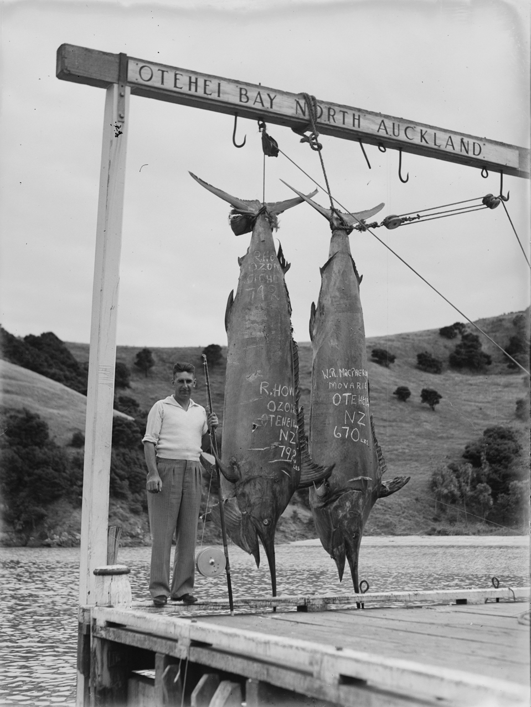

História da Pesca no Litoral Paranaense
O litoral do Paraná possui uma rica tradição pesqueira que remonta às comunidades caiçaras tradicionais e se estende até o desenvolvimento da pesca esportiva e comercial no século XX. Cidades como Paranaguá, Guaratuba, Antonina e as ilhas da região (como a Ilha do Mel e Ilha do Superagui) basearam grande parte de sua subsistência e identidade cultural na relação com o mar.
Historicamente, além da pesca de subsistência e artesanal de espécies locais, o litoral sul do Brasil e suas águas profundas atraíram a atenção de entusiastas da pesca de grandes peixes oceânicos, como os imponentes Marlins (Marlim-Azul e Marlim-Branco). Os registros históricos mostram a evolução das técnicas de pesca, passando de uma atividade rústica para estruturas organizadas voltadas ao turismo de pesca, integrando a economia local ao cenário náutico nacional.
A Vida na Comunidade Caiçara
Os caiçaras são os habitantes tradicionais do litoral, formados a partir da miscigenação entre indígenas, portugueses e africanos. A pesca artesanal não é apenas uma atividade econômica para essas comunidades, mas um pilar cultural transmitido de geração em geração.
Saberes Tradicionais
O conhecimento das marés, dos ventos, do comportamento dos peixes e a confecção de redes e embarcações (como as tradicionais canoas de um tronco só) constituem um patrimônio imaterial inestimável para o Paraná.
Galeria Histórica
Abaixo, apresentamos o registro fotográfico histórico que ilustra os grandes marcos da pesca oceânica e a imponência dos peixes capturados na região costeira, destacando o tamanho dos desafios pesqueiros do século passado.

Registro Histórico de Pesca Oceânica
Pescador posa orgulhosamente ao lado de dois exemplares massivos de Marlim capturados em águas costeiras. Na estrutura superior ("Otehei Bay"), vê-se a indicação da pesagem e os registros de peso marcados diretamente na pele dos peixes (670 lbs e 792 lbs).
O peso de 792 libras indicado na foto equivale a aproximadamente 359 kg, demonstrando a magnitude e a força da fauna marinha profunda que visita a nossa costa.
Referências e Fontes
- IPHAN (Instituto do Patrimônio Histórico e Artístico Nacional): Dossiê de Registro da Cultura Caiçara e as técnicas tradicionais de pesca.
- Dicionário Histórico-Geográfico do Paraná: Dados sobre a evolução das comunidades pesqueiras do litoral paranaense.
- Museu de Arqueologia e Etnologia da UFPR (MAE): Acervos fotográficos e documentais sobre os pescadores artesanais do Paraná.